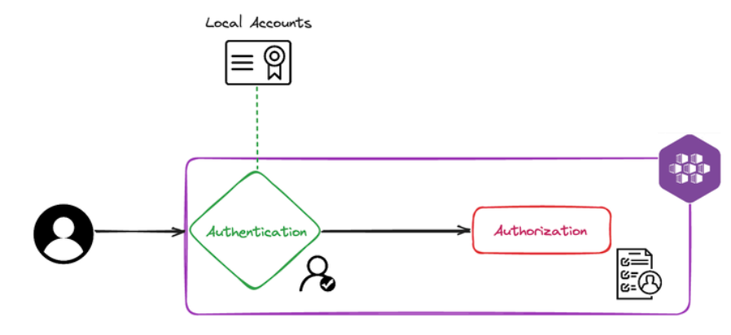
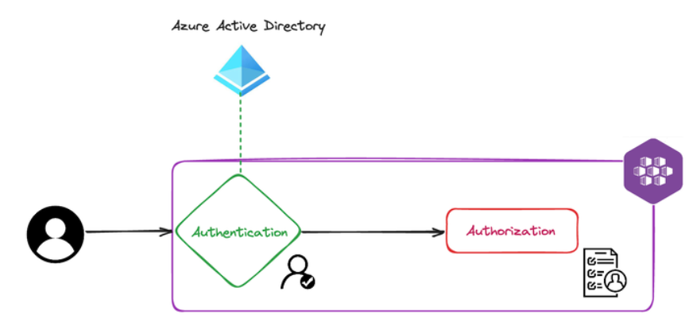
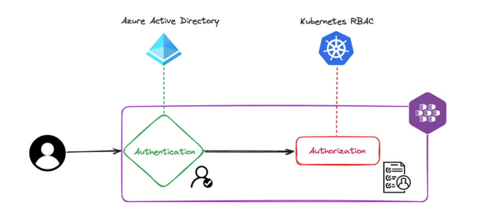
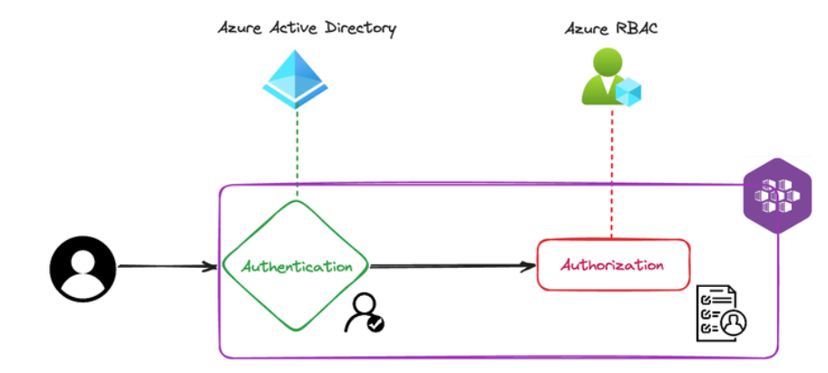

AKS, Microsoft's Azure Kubernetes Service, offers three distinct RBAC (Resource-Based Access Control) options to manage access within the AKS cluster:
To better understand these options and their functionality, let's delve into the specific requirements of our AKS cluster. Our AKS deployment is tailored to accommodate three main user roles:
Additionally, we have established three corresponding Azure Active Directory (AAD) groups to encapsulate these user roles:
| AAD Group | Type of Users | Scope |
|---|---|---|
| cloudblogs-aks-cluster-admin-[env] | Cluster Admin | Write access to the entire cluster |
| cloudblogs-aks-developers-[env] | Developers | Read acccess to selected namespaces |
| cloudblogs-aks-sre-[env] | SRE Users | Write access to selected namespaces |
** [env] represents the cluster environment (like, staging, pre-prod, prod, etc...)
With these requirements outlined, let's explore each RBAC option in detail, beginning with Authentication with/without Azure Active Directory, followed by different Authorization options, and understand why a particular option is chosen for our cluster.
When Azure Active Directory (AAD) integration is not enabled, AKS, by default, uses local accounts based on x509 certificates for authentication. This means that users and admins get an X509 client certificate that is local to the cluster referred to as local accounts.
On clusters, where AAD integration is not enabled, users and admin will have the same full access to the cluster resources. Hence, this is not a recommedned RBAC approach.

When AAD integration is enabled, as a result of issuing the get-credentials command for the cluster, users will have an empty kubeconfig file. When a user attempts to execute a command against the cluster for the first time, kubectl will try to sign the user in prompting an OAuth2 device code flow. On successful authentication, it will pull down the credential into the local kubeconfig file for subsquent calls to the cluster.
$ kubectl get pods
To sign in, use a web browser to open the page https://microsoft.com/devicelogin and enter the code XXXXXXXXX to authenticate.

There are also 3 different approaches to implement authorization in AKS described below. Let's consider that AKS-Managed AAD integration is enabled and local accounts are disabled to assure complete security in all the below scenarios.
Since we have considered that AAD integration is enabled for authentication and local accounts are disabled, no user or identity has any sort of access to the cluster by default.
To create Kubernetes RBAC (roles-cluster roles and role bindings-cluster role bindings), at least one identity must initially have admin access to the cluster. Hence, in this model of authorization, it is required that an AD group be defined to have admin access to the cluster from the beginning, upon the creation of the cluster. Then, users that are members of this AAD group can configure the rest of the access control for other AD users, groups, or service principles by assigning them Kubernetes roles and cluster roles.
*In our cluster, we have an AAD Group "cloudblogs-aks-cluster-admin" which was assigned as the cluster admin while enabling AAD authentication. All users in this AAD group has super user access to the cluster, and they have access to configure rest of the access control.*

In Kubernetes RBAC, the access is controlled using Kubernetes Role, and Role Bindings objects.
Role:
A role is a collection of access in a specific namespace. In our cluster requirement, we are having two roles:
apiVersion: rbac.authorization.k8s.io/v1
kind: Role
metadata:
namespace: riskiq
name: read-access-developer-role
rules:
- apiGroups: [""]
resources: ["*"]
verbs: ["get", "list", "watch"]
---
apiVersion: rbac.authorization.k8s.io/v1
kind: Role
metadata:
namespace: riskiq
name: editor-access-sre-role
rules:
- apiGroups: [""]
resources: ["pods", "deployments", "services", "configmaps", "secrets", "jobs", "cronjobs"]
verbs: ["create", "update", "delete", "patch", "get", "list", "watch"]
Role Binding:
A role binding is a role assignemnt to an User or AAD Group to perform the action within a namespace. We have 2 rolebindings defined in our cluster.
kind: RoleBinding
apiVersion: rbac.authorization.k8s.io/v1
metadata:
name: read-access-developer-role-binding-aad
namespace: riskiq
roleRef:
apiGroup: rbac.authorization.k8s.io
kind: Role
name: read-access-developer-role
subjects:
- kind: Group
namespace: riskiq
name: 7a3dd05e-d14e-4169-b852-5769968653d5
---
kind: RoleBinding
apiVersion: rbac.authorization.k8s.io/v1
metadata:
name: editor-access-sre-role-binding-aad
namespace: riskiq
roleRef:
apiGroup: rbac.authorization.k8s.io
kind: Role
name: editor-access-sre-role
subjects:
- kind: Group
namespace: riskiq
name: 7a3dd05e-d14e-4169-b852-5769968653d5
In our cluster, we are using Kubernetes RBAC for authorization. We have role and role bindings defined for each namespace that controls the access of developers and SRE users.
Azure RBAC will take the Azure AD integration one step further and will take care of both authentication and authorization inside an AKS cluster. You don't need to create any YAML manifests (role and role bindings) to manage user access in the namespaces. After the creation of the cluster, you can use the built-in Azure roles for AKS (which include AKS RBAC Admin, AKS RBAC Cluster Admin, AKS RBAC Reader, and AKS RBAC Writer) to assign to Azure identities such as a user, group, or service principal. The idea here is to work similarly as the other Azure services by using Azure AD roles (IAM) only.

There are primarily 5 major type of built-in roles:
You can assign these role to the Azure AD groups to get the access for the users in the group. But there is one "catch" though: you can't use the Portal and assign this role using the Access Control (IAM) blade from the AKS service because it will assign that role for all namespaces inside the cluster, not just for namespace needed.
az role assignment create --role "Azure Kubernetes Service RBAC Admin" --assignee <<groud-id for cloudblogs-aks-developers >> --scope /subscriptions/<<subscription>>/resourcegroups/<<rg>>/providers/Microsoft.ContainerService/managedClusters/<<cluster-name>>/namespaces/riskiq
Note that the --scope property assigns that role only for the riskiq namespace. One downside for this approach is that you can't see this role assignment in the Portal either. You will need to utilize Az CLI to see the scopes you have assigned for namespaces:
az role assignment list --scope /subscriptions/<<subscription>>/resourcegroups/<<rg>>/providers/Microsoft.ContainerService/managedClusters/<<cluster-name>>/namespaces/riskiq
At this point, users from group cloudblogs-aks-developers-[env] can run below command to connect to AKS:
az aks get-credentials --name myaks --resource-group myaksrg
We didn't choose this approach because Azure RBAC doesn't give fine-grained control over access to individual namespaces. In our cluster, we want to grant different access to different namespaces for different users, which is not possible using Azure RBAC. Also, it's very hard to trace role assignments in Azure RBAC because you can't see this role assignment in the Portal. You will need to utilize Az CLI to see the scopes you have assigned for namespaces.
This is a new feature introduced by Microsoft where you can integrate AKS cluster with Azure Active Directory in a single click from the Azure Portal. Here, the control plane and data plane (the cluster and the Kubernetes objects inside it) is integrated with Azure AD. This helps in controlling user access using Azure AD, which is much easier than using the traditional Kubernetes way. Also, this gives us more control over authorization than the Azure RBAC (by using Azure built-in roles) because here we use the traditional Kubernetes roles and role bindings to manage the access of users to different namespaces. Additionally, you can easily see the role assignments in the Portal, which is not possible in the Azure RBAC.
az aks update --resource-group myResourceGroup --name myAKSCluster --enable-aad --aad-admin-group-object-ids <<aad-group-object-id>>
We choose this approach because AKS-Managed Azure AD Integration provides fine-grained control over access to individual namespaces using traditional Kubernetes RBAC. It also provides ease of use and visibility into role assignments through the Azure Portal.
With AKS-Managed Azure AD Integration, we have successfully implemented RBAC in our AKS cluster, providing appropriate access control to different users and groups based on their roles and responsibilities.